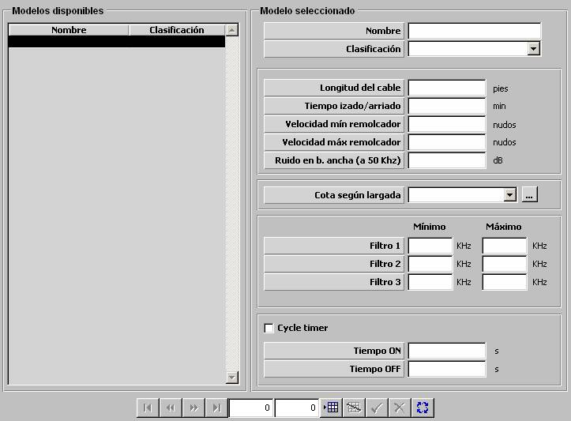

Productor de Ruido

Descripción de los parámetros:
Longitud del cable: Este parámetro determina la máxima longitud del cable del productor de ruido y por tanto condiciona la máxima profundidad a la que puede ser desplegado.
Unidades: pies
Rango: 0 – 9999
Tiempo de Izado / Arriado: Este parámetro determina el tiempo que tarda en desplegar el productor de ruido al total de la longitud del cable. Coincide con el tiempo que tarda en recoger completamente el productor de ruido cuando se encuentra desplegado a la longitud total del cable.
Unidades: minutos
Rango: 0 – 9999
Cota según Largada: Esta tabla modela la cota a la que se sumerge el productor de ruido cuando se encuentra desplegado, según la longitud de cable desplegado (largada) y velocidad de la unidad propia. Ver apartado Cota según Largada.
Velocidad Mínima del Remolcador: Este parámetro determina la velocidad mínima a la que una unidad puede desplegar el productor de ruido.
Unidades: nudos
Rango: 0 – 99
Velocidad Máxima del Remolcador: Este parámetro determina la velocidad máxima a la que una unidad puede desplegar el productor de ruido.
Unidades: nudos
Rango: 0 – 99
Ruido en Banda Ancha (a 50 kHz): Este parámetro determina el nivel de ruido en banda ancha que genera el productor de ruido. Es tenido en cuenta para modelar cómo afecta el productor de ruido a los sonares.
Unidades: dB
Rango: 0 – 999
Filtro 1 a 3, Mínimo y Máximo: Estos parámetros determina los límites inferior y superior de los tres posibles filtros en frecuencia que puede aplicar este productor de ruido. El operador podrá activar uno de estos tres filtros, y mientras permanezca activo, se considera que el productor de ruido no emite en el intervalo de frecuencia correspondiente.
Unidades: kHz
Rango: 0 – 99999
Cycle Timer: Este parámetro determina si el productor de ruido tiene capacidad de activar el Cycle Timer. Si el productor de ruido tiene esta capacidad, el operador podrá activar la misma, y mientras permanezca activa el equipo se encenderá y apagará automáticamente con los tiempos especificados a continuación.
Tiempo ON: Tiempo que permanece encendido el productor de ruido cuando se ha activado el “Cycle Timer”.
Unidades: segundos
Rango: 0 – 99
Tiempo OFF: Tiempo que permanece encendido el productor de ruido cuando se ha activado el “Cycle Timer”.
Unidades: segundos
Rango: 0 – 99